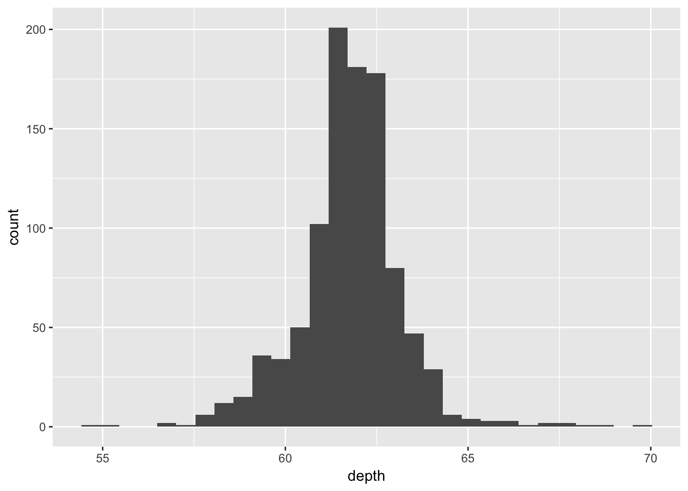
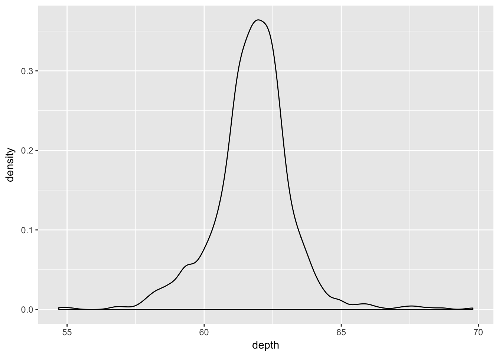
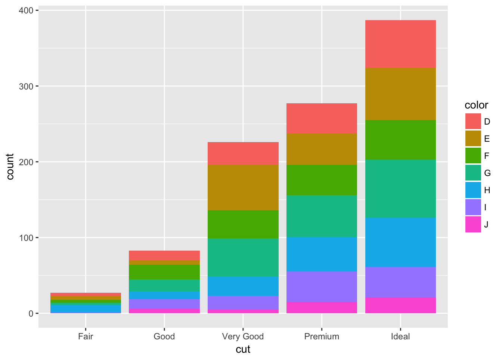
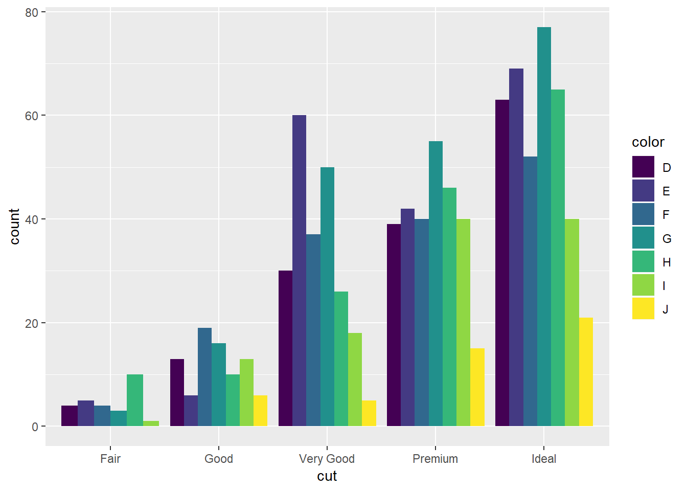
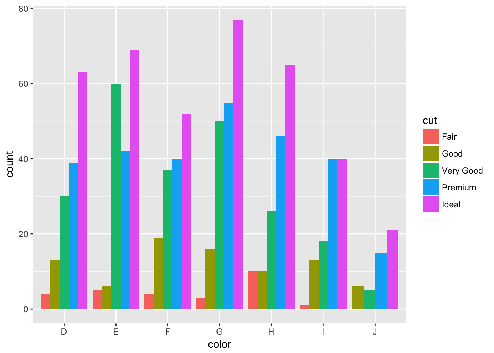
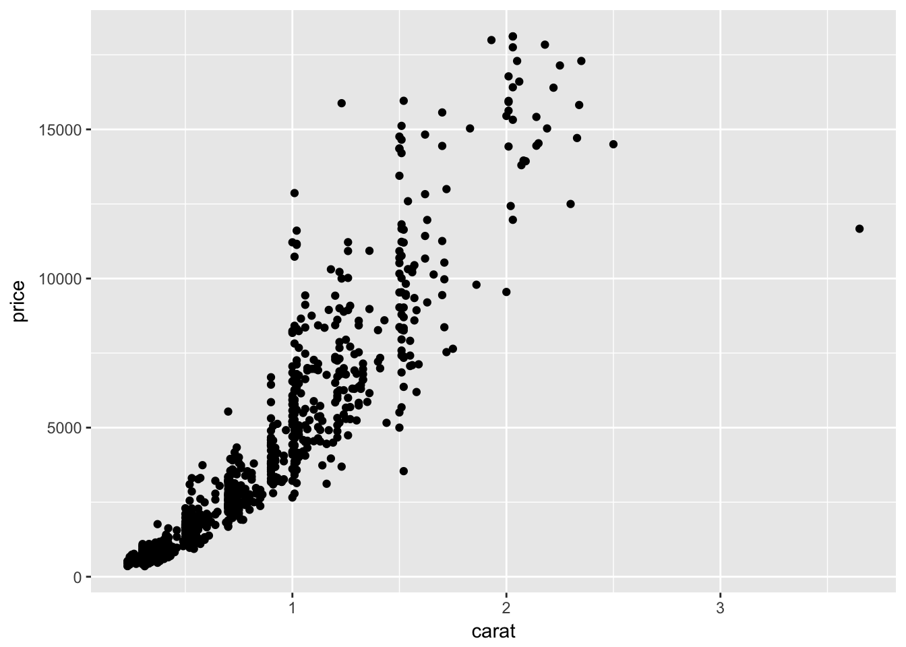
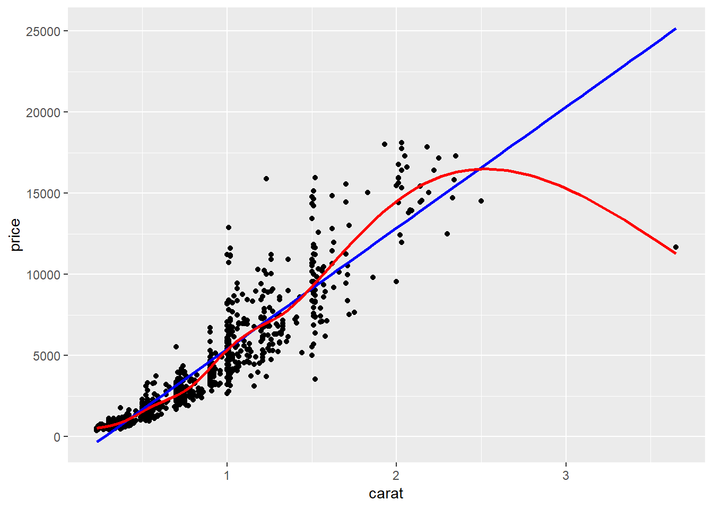
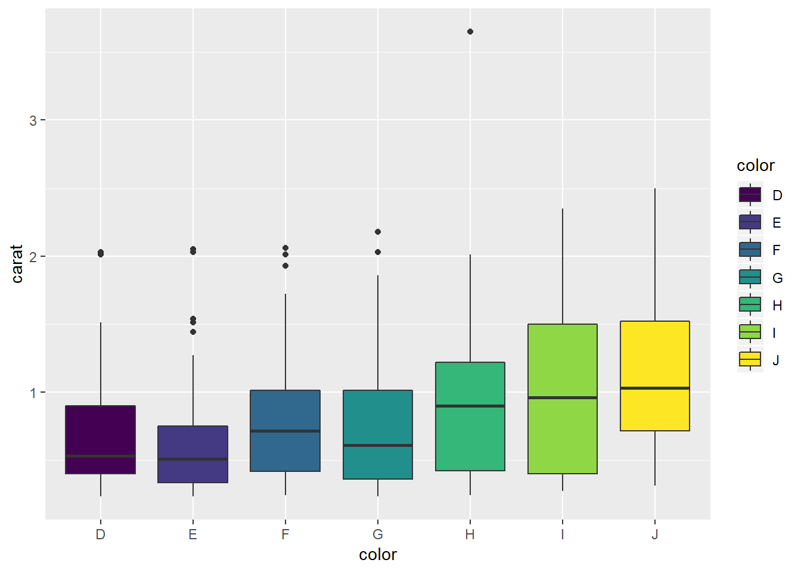
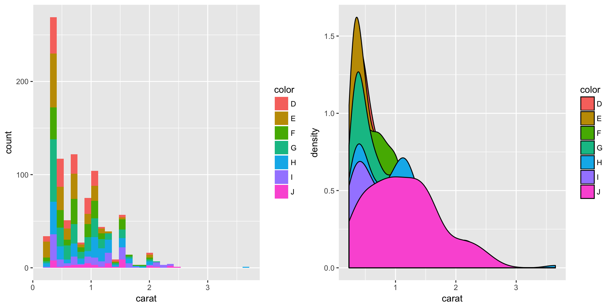
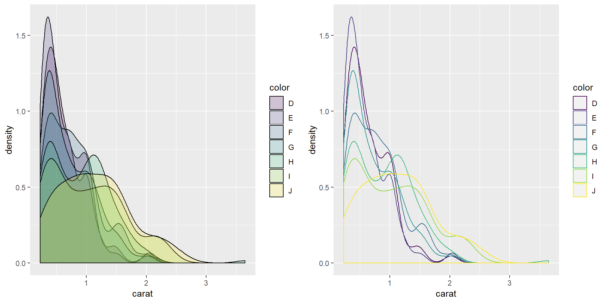

Lesson 07 - Creating graphics
Robin Donatello
Last Updated 08-18-2018
This lesson is a brief excerpt from Robin Donatello’s [Full data viz tutorial].
Introduction
Visualizing your data is hands down the most important thing you can learn to do. Seeing is critical to understanding. There are two audiences in mind when creating data visualizations:
- For your eyes only (FYEO). These are quick and dirty plots, without annotation. Meant to be looked at once or twice.
- To share with others. These need to completely stand on their own. Axes labels, titles, colors as needed, possibly captions.
You will see, and slowly learn, how to add these annotations and how to clean up your graphics to make them sharable. Functions inside the ggplot2 package automatically does a lot of this work for you. Remember this package has to be loaded prior to being able to access the functions within.
library(ggplot2)Use the navbar to the left to help you navigate this long document.
The syntax of ggplot
The reason we use the functions in ggplot2 is for consistency in the structure of it’s arguments. Here is a bare bones generic plotting function:
ggplot(data, aes(x=x, y=y, col=col, fill=fill, group=group)) + geom_THING() Required arguments
data: What data set is this plot using? This is ALWAYS the first argument.aes(): This is the aestetics of the plot. What’s varible is on the x, what is on the y? Do you want to color by another variable, perhaps fill some box by the value of another variable, or group by a variable.geom_THING(): Every plot has to have a geometry. What is the shape of the thing you want to plot? Do you want to plot points - usegeom_points(). Want to connect those points with a line? Usegeom_lines(). We will see many varieties in this lab.
The Diamonds Data
We will use a subset of the diamonds dataset that comes with the ggplot2 package. This dataset contains the prices and other attributes of almost 54,000 diamonds. Review ?diamonds to learn about the variables we will be using.
library(ggplot2)
data("diamonds")
set.seed(1410) # Make the sample reproducible
dsmall <- diamonds[sample(nrow(diamonds), 1000), ]Univariate (One Variable)
Categorical variables
Both Nominal and Ordinal data types can be visualized using the same methods: tables, barcharts and pie charts.
Tables
Tables are the most common way to get summary statistics of a categorical variable. The table() function produces a frequency table, where each entry represents the number of records in the data set holding the corresponding labeled value.
table(dsmall$cut)##
## Fair Good Very Good Premium Ideal
## 27 83 226 277 387There are 27 Fair quality diamonds, 83 good quality and 387 Ideal quality diamonds in this sample.
Barcharts / Barplots
A Barchart or barplot takes these frequencies, and draws bars along the X-axis where the height of the bars is determined by the frequencies seen in the table.
The geometry needed to draw a barchart in ggplot is geom_bar().
ggplot(dsmall, aes(x=cut)) + geom_bar()
Continuous variable
The price, carat, and depth of the diamonds are all continuous variables.
Histograms
Rather than showing the value of each observation, we prefer to think of the value as belonging to a bin. The height of the bars in a histogram display the frequency of values that fall into those of those bins.
Since the x-axis is continuous the bars touch. This is unlike the barchart that has a categorical x-axis, and vertical bars that are separated.
ggplot(dsmall, aes(x=depth)) + geom_histogram()
Density plots
To get a better idea of the true shape of the distribution we can “smooth” out the bins and create what’s called a density plot or curve. Notice that the shape of this distribution curve is much more… “wigglier” than the histogram may have implied.
ggplot(dsmall, aes(x=depth)) + geom_density()
Histograms + density
Often is is more helpful to have the density (or kernal density) plot on top of a histogram plot.
- The syntax starts the same, we’ll add a new geom,
geom_densityand color the line blue. - Then we add the histogram geom using
geom_histogrambut must specify that the y axis should be on the density, not frequency, scale.- Note that this has to go inside the aestetic statement
aes().
- Note that this has to go inside the aestetic statement
- I’m also going to get rid of the fill by using
NAso the colored bars don’t plot over the density line.
ggplot(dsmall, aes(x=depth)) + geom_density(col="blue") +
geom_histogram(aes(y=..density..), colour="black", fill=NA)
Boxplots
Another very common way to visualize the distribution of a continuous variable is using a boxplot. Boxplots are useful for quickly identifying where the bulk of your data lie. R specifically draws a “modified” boxplot where values that are considered outliers are plotted as dots.
base
boxplot(dsmall$depth)
Notice that the only axis labeled is the y=axis. Like a dotplot the x axis, or “width”, of the boxplot is meaningless here. We can make the axis more readable by flipping the plot on it’s side.
boxplot(dsmall$depth, horizontal = TRUE, main="Distribution of diamond prices", xlab="Dollars")
Horizontal is a bit easier to read in my opinion.
What about ggplot? ggplot doesn’t really like to do univariate boxplots. You’ll see those later when we create one boxplot per group.
Bivariate (Two Variables)
Categorical v. Categorical
Two-way Tables
Cross-tabs, cross-tabulations and two-way tables (all the same thing, different names) can be created by using the table() function.
Frequency table
The frequency table is constructed using the table() function.
table(dsmall$cut, dsmall$color)##
## D E F G H I J
## Fair 4 5 4 3 10 1 0
## Good 13 6 19 16 10 13 6
## Very Good 30 60 37 50 26 18 5
## Premium 39 42 40 55 46 40 15
## Ideal 63 69 52 77 65 40 21There are 4 Fair diamonds with color D, and 21 Ideal quality diamonds with color J.
Cell proportions
Wrapping prop.table() around a table gives you the cell proportions.
prop.table(table(dsmall$cut, dsmall$color))##
## D E F G H I J
## Fair 0.004 0.005 0.004 0.003 0.010 0.001 0.000
## Good 0.013 0.006 0.019 0.016 0.010 0.013 0.006
## Very Good 0.030 0.060 0.037 0.050 0.026 0.018 0.005
## Premium 0.039 0.042 0.040 0.055 0.046 0.040 0.015
## Ideal 0.063 0.069 0.052 0.077 0.065 0.040 0.0210.4% of all diamonds are D color and Fair cut, 2.1% are J color and Ideal cut.
Row proportions
To get the row proportions, you specify margin=1. The percentages now add up to 1 across the rows.
round(prop.table(table(dsmall$cut, dsmall$color), margin=1),3)##
## D E F G H I J
## Fair 0.148 0.185 0.148 0.111 0.370 0.037 0.000
## Good 0.157 0.072 0.229 0.193 0.120 0.157 0.072
## Very Good 0.133 0.265 0.164 0.221 0.115 0.080 0.022
## Premium 0.141 0.152 0.144 0.199 0.166 0.144 0.054
## Ideal 0.163 0.178 0.134 0.199 0.168 0.103 0.05414.8% of all Fair quality diamonds are color D. 5.4% of all Ideal quality diamonds have color J.
Column proportions
To get the column proportions, you specify margin=2. The percentages now add up to 1 down the columns.
round(prop.table(table(dsmall$cut, dsmall$color), margin=2),3)##
## D E F G H I J
## Fair 0.027 0.027 0.026 0.015 0.064 0.009 0.000
## Good 0.087 0.033 0.125 0.080 0.064 0.116 0.128
## Very Good 0.201 0.330 0.243 0.249 0.166 0.161 0.106
## Premium 0.262 0.231 0.263 0.274 0.293 0.357 0.319
## Ideal 0.423 0.379 0.342 0.383 0.414 0.357 0.4472.7% of all D color diamonds are of Fair quality. 44.7% of all J color diamonds are of Ideal quality.
Grouped bar charts
To compare proprtions of one categorical variable within the same level of another, is to use grouped barcharts.
Plot the cut on the x axis, but then fill using the second categorical variable. This has the effect of visualizing the row percents from the table above. The percent of color, within each type of cut.
ggplot(dsmall, aes(x=cut, fill=color)) + geom_bar()
The default is a stacked barchart. So add the argument position=dodge inside the geom_bar layer to put the bars side by side.
ggplot(dsmall, aes(x=cut, fill=color)) + geom_bar(position = "dodge")
And look, an automatic legend. What if I wanted to better compare cut within color group? This is the column percentages. Just switch which variable is the x axis and which one is used to fill the colors!
ggplot(dsmall, aes(x=color, fill=cut)) + geom_bar(position = "dodge")
And this easy change is why we love ggplot2.
Continuous v. Continuous
Scatterplot
The most common method of visualizing the relationship between two continuous variables is by using a scatterplot.
With ggplot we specify both the x and y variables, and add a point.
ggplot(dsmall, aes(x=carat, y=price)) + geom_point()
Adding lines to the scatterplots
Two most common trend lines added to a scatterplots are the “best fit” straight line and the “lowess” smoother line. This is done by adding a geom_smooth() layer.
ggplot(dsmall, aes(x=carat, y=price)) + geom_point() + geom_smooth() 
Here the point-wise confidence interval for this lowess line is shown in grey. If you want to turn the confidence interval off, use se=FALSE. Also notice that the smoothing geom uses a different function or window than the lowess function used in base graphics.
Here it is again using the ggplot plotting function and adding another geom_smooth() layer for the lm (linear model) line in blue, and the lowess line (by not specifying a method) in red.
ggplot(dsmall, aes(x=carat, y=price)) + geom_point() +
geom_smooth(se=FALSE, method="lm", color="blue") +
geom_smooth(se=FALSE, color="red")
Continuous v. Categorical
Create an appropriate plot for a continuous variable, and plot it for each level of the categorical variable.
Grouped boxplots
A simple addition, just define your x and y accordingly. Specifying your fill to be the same variable as your x, gives you an automatic legend.
ggplot(dsmall, aes(x=color, y=carat, fill=color)) + geom_boxplot()
Adding violins to the boxplot
A violin plot is like a density plot, turned on it’s side, and reflected around the axis for symmetry purposes. Overlaying a boxplot and a violin plot serves a similar purpose to Histograms + Density plots. It shows outliers, the location of most the data, and better shows the shape/skew of the distribution
ggplot(dsmall, aes(x=color, y=carat, fill=color)) +
geom_violin(alpha=.1) +
geom_boxplot(alpha=.5, width=.2)
Grouped histograms
By default ggplot wants to overlay all plots on the same grid. This doesn’t look to good with histograms or density plots. The top layer hides the others.
a <- ggplot(dsmall, aes(x=carat, fill=color)) + geom_histogram()
b <- ggplot(dsmall, aes(x=carat, fill=color)) + geom_density()
gridExtra::grid.arrange(a,b, ncol=2)
The solid fills are still difficult to read, so we can either turn down the alpha (turn up the transparency) or only color the lines and not the fill.
d <- ggplot(dsmall, aes(x=carat, fill=color)) + geom_density(alpha=.2)
e <- ggplot(dsmall, aes(x=carat, col=color)) + geom_density()
gridExtra::grid.arrange(d,e, ncol=2)
These last few plots demonstrate how to place two plots side by side.
- Each plot is stored as an object (
a,b,d,e) - The
grid.arrangefunction is located within thegridExtrapackage, plots the specified objects in the number of columns specified byncol.
Additional Resources
For a full , and comprehensive reference guide on how to do nearly anything in ggplot – this is by far my favorite reference http://www.cookbook-r.com/Graphs/ I reference things in there (like how to remove or change the title of a legend) constantly.
- R Graphics: https://www.stat.auckland.ac.nz/~paul/RGraphics/rgraphics.html The best book about using base graphics
- STHDA: Statisical tools for high-throughput data analysis. http://www.sthda.com/english/
- Quick-R: Basic Graphs
- Quick-R: ggplot2
- Books
- Help lists
- ggplot2 mailing list http://groups.google.com/group/ggplot2
- stackoverflow http://stackoverflow.com/tags/ggplot2
- Chico R users group
For any other Google Search be sure to limit searches to within the past year or so. R packages get updated very frequently, and many functions change or become obsolete.